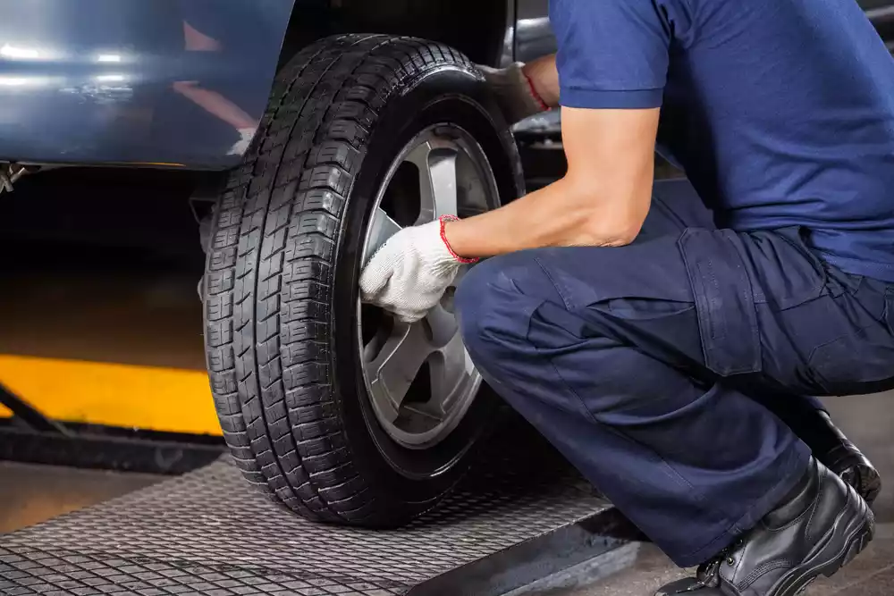
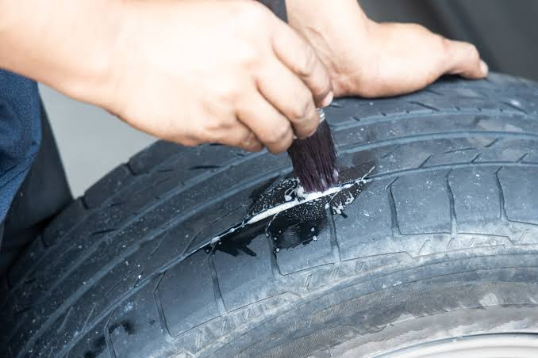
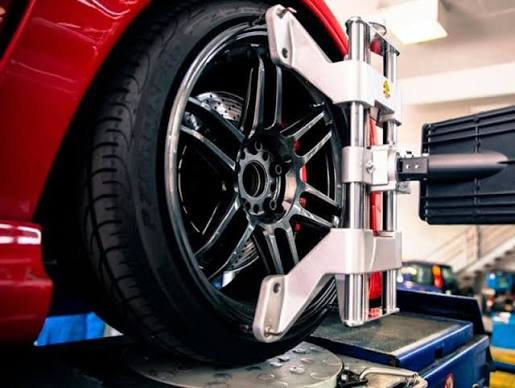

Cambio de llantas
Te ayudamos a cambiar tus llantas.
Tu seguridad comienza con unas buenas llantas.
Ver servicios
Te ayudamos a cambiar tus llantas.

Reparamos llantas ponchadas.

Servicio de balanceo para tus ruedas.
¿Necesitas cambiar o reparar tus llantas?
Teléfono: 55 777 777 77